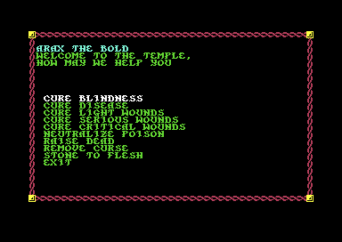

<meta charset="utf-8">
<meta name="viewport" content="width=device-width, initial-scale=1">
<title>Pool of Radiance</title>
<link rel="preconnect" href="https://fonts.googleapis.com">
<link rel="stylesheet" href="https://fonts.googleapis.com/css2?family=Lato:wght@400;700;900&family=IBM+Plex+Mono:wght@400;500&display=swap">
<style>
:root{
  --bg:#23262d; --paper:#e9e7e1; --surface:#ffffff; --surface-2:#f1efea; --line:#d5d3cc; --line-soft:#e0ded8;
  --ink:#2f3136; --ink-soft:#55585f; --ink-mute:#80838a;
  --link:#1f5fa8; --link-hover:#154480; --accent:#1f5fa8;
  --amber:#c25a00; --cyan:#1f5fa8; --coral:#d04a3a; --green:#2a8a4a; --violet:#4a5bd6; --hl:#fff0c2;
  --chip:#2f3136; --chip-ink:#ffffff;
  --c64blue:#40318d; --c64grey:#686868;
  --fd:'Lato',system-ui,sans-serif; --fb:'Lato',system-ui,sans-serif; --fm:'IBM Plex Mono',ui-monospace,Menlo,monospace;
  --col:1080px; --gx:68px; --fs:17px; --lh:1.6; --hw:900; --h1:46px; --h2:26px; --sy:48px; --pp:26px; --r:10px;
  --plate-shadow:0 1px 2px rgba(0,0,0,.05),0 4px 14px rgba(0,0,0,.05);
}
*{box-sizing:border-box}
html{background:var(--bg);min-height:100%}
body{background:var(--paper);color:var(--ink);font-family:var(--fb);font-size:var(--fs);line-height:var(--lh);max-width:var(--col);margin:0 auto;min-height:100vh;padding:0 0 4rem}
h1,h2,h3{font-weight:var(--hw);letter-spacing:-.01em;text-wrap:balance;color:var(--ink);margin:0}
.wrap{padding:0 var(--gx)}
.hero{padding:48px var(--gx) 8px;text-align:left}
.eyebrow{font-family:var(--fm);font-size:12px;letter-spacing:.08em;text-transform:uppercase;color:var(--ink-mute);margin:0 0 10px}
.hero h1{font-size:var(--h1);line-height:1.15;letter-spacing:-.02em;margin:0 0 14px}
.hero .sub{margin:0 0 .6em;color:var(--ink-soft)}
section{padding:var(--sy) 0 24px}
section:last-of-type{border-bottom:none}
.fig{font-family:var(--fm);font-size:12px;letter-spacing:.08em;text-transform:uppercase;color:var(--ink-mute);margin:0 0 10px}
h2.t{font-size:var(--h2);margin-bottom:12px}
.lede{color:var(--ink-soft);margin:0 0 30px}
.plate{background:var(--surface);border:1px solid var(--line);border-radius:var(--r);padding:var(--pp);box-shadow:var(--plate-shadow)}
.cap{font-size:14px;color:var(--ink-mute);margin-top:14px;line-height:1.55}
.cap b{color:var(--ink);font-weight:700}
code{font-family:var(--fm);font-size:.82em;background:var(--chip);color:var(--chip-ink);border-radius:4px;padding:2px 6px;white-space:nowrap}
@media (max-width:760px){:root{--gx:18px}}
.sp-miss{font-family:var(--fm);font-size:13px;color:var(--coral);margin:8px 0 0}
.sp-grid{display:grid;grid-template-columns:minmax(0,1fr) minmax(0,1.15fr);gap:22px;align-items:start}
.sp-form{display:grid;grid-template-columns:repeat(4,minmax(0,1fr));gap:8px;margin:0 0 12px}
.sp-form label{font-size:12.5px;color:var(--ink-mute);line-height:1.3}
.sp-form input{display:block;width:100%;font-family:var(--fm);font-size:15px;border:1px solid var(--line);border-radius:6px;padding:4px 6px;margin-top:3px;background:var(--surface);color:var(--ink)}
.sp-bar{display:flex;flex-wrap:wrap;gap:6px;align-items:center;margin:0 0 10px}
.sp-bar button{font-family:var(--fm);font-size:12.5px;border:1px solid var(--line);background:var(--surface);color:var(--ink);border-radius:6px;padding:5px 10px;cursor:pointer}
.sp-bar button.go{background:var(--ink);color:#fff;border-color:var(--ink)}
.sp-bar .lab{font-family:var(--fm);font-size:11.5px;color:var(--ink-mute);letter-spacing:.05em;text-transform:uppercase;margin-right:4px}
.sp-sheet{background:#1b1c20;color:#e8e6df;border-radius:8px;padding:14px 16px;font-family:var(--fm);font-size:13.5px;line-height:1.6}
.sp-sheet table{border-collapse:collapse;width:100%}
.sp-sheet td{padding:1px 0;vertical-align:top;color:#e8e6df}
.sp-sheet td:first-child{color:#9a9890;padding-right:12px;white-space:nowrap}
.sp-sheet .hot{color:#ffd37a}
.sp-sheet .dead{color:#ff8a7a}
.sp-log{font-family:var(--fm);font-size:12.5px;color:var(--ink-soft);margin:10px 0 0;line-height:1.5;min-height:3em}
.sp-tbl-wrap{overflow-x:auto}
.sp-tbl{border-collapse:collapse;width:100%;font-size:14px;min-width:640px}
.sp-tbl th,.sp-tbl td{border-bottom:1px solid var(--line-soft);padding:6px 8px;text-align:left;vertical-align:top}
.sp-tbl th{font-family:var(--fm);font-size:11.5px;letter-spacing:.05em;text-transform:uppercase;color:var(--ink-mute);font-weight:500;white-space:nowrap}
.sp-tbl td.nm{font-family:var(--fm);font-size:13px;white-space:nowrap}
.sp-tbl ul{margin:0;padding-left:18px}
.sp-tbl li{margin:0 0 2px}
.sp-files{font-family:var(--fm);font-size:11.5px;color:var(--ink-mute)}
.sp-form select{display:block;width:100%;font-family:var(--fm);font-size:14px;border:1px solid var(--line);border-radius:6px;padding:4px 6px;margin-top:3px;background:var(--surface);color:var(--ink)}
.tp-menu{background:#1b1c20;border-radius:8px;padding:10px 8px;font-family:var(--fm);font-size:13.5px}
.tp-menu button{display:flex;justify-content:space-between;gap:12px;width:100%;background:none;border:0;border-radius:4px;color:#e8e6df;font:inherit;padding:3px 8px;cursor:pointer;text-align:left}
.tp-menu button:hover{background:#2e3038}
.tp-menu button.hid{color:#8a8880}
.tp-menu .pr{color:#9a9890;white-space:nowrap}
.tp-shot{margin:16px 0}.tp-shot img{display:block;width:100%;max-width:384px;image-rendering:pixelated;border-radius:6px}.tp-shot figcaption{font-size:14px;color:var(--ink-mute);margin-top:6px}
@media (max-width:760px){.sp-grid{grid-template-columns:1fr}.sp-form{grid-template-columns:repeat(2,minmax(0,1fr))}}
</style>
<!-- tabs -->
<header class="hero">
  <p class="eyebrow">1988 · SSI</p>
  <h1>Pool of Radiance</h1>
  <p class="sub">Spells and monsters' powers are routines in four spell files, and several of them do something other than the rule book says: PRAYER helps the enemy, a mirror never wards off the vampire, a drained level-1 fighter becomes a magic-user of level 255, and a temple charges for curing blindness and disease whether or not it cures them.</p>
</header>
<main class="wrap">

<section id="drain" data-part="effects-2">
  <p class="fig">01 · Level drain</p>
  <h2 class="t">Bug: draining a level-1 fighter turns it into a dead magic-user of level 255</h2>
  <p class="lede">A hit from a wight or a wraith drains one level, and one from a spectre or the vampire drains two. The drain takes the level from the class whose present level cost the most experience. For a character whose classes are all at level 1 there is no such class, because level 1 costs nothing in any class, and the routine falls back on the class it chose the time before.</p>
  <div class="plate">
    <div class="sp-grid">
      <div>
        <div class="sp-bar"><span class="lab">Start as</span><span id="sp-presets"></span></div>
        <div class="sp-form">
          <label>Magic-user level<input type="number" id="sp-mu" min="0" max="9" value="0"></label>
          <label>Cleric level<input type="number" id="sp-cl" min="0" max="9" value="0"></label>
          <label>Thief level<input type="number" id="sp-th" min="0" max="9" value="0"></label>
          <label>Fighter level<input type="number" id="sp-fi" min="0" max="9" value="1"></label>
          <label>Hit points<input type="number" id="sp-hp" min="1" max="120" value="10"></label>
          <label>Wisdom<input type="number" id="sp-wis" min="3" max="18" value="10"></label>
          <label>Last class drained<input type="number" id="sp-last" min="0" max="3" value="0"></label>
        </div>
        <div class="sp-bar">
          <button type="button" id="sp-reset">Start again</button>
          <button type="button" class="go" id="sp-one">Wight's hit: drain one</button>
          <button type="button" class="go" id="sp-two">Vampire's hit: drain two</button>
        </div>
        <p class="cap">The last class drained is the byte the routine falls back on: 0 magic-user, 1 cleric, 2 thief, 3 fighter. The file holds 0 on the disk, and the game loads it afresh whenever another spell file has been in its place.</p>
      </div>
      <div>
        <div class="sp-sheet" id="sp-sheet"><p class="sp-miss">The drain runs the game's own code, with the site's shared scripts that the built site serves.</p></div>
        <div class="sp-log" id="sp-log"></div>
      </div>
    </div>
    <p class="cap">Each press runs SPELLE02's own routine on the kit's 6502 over the listing's bytes: <code>energy_drain</code> (<code>$A7A3</code>) for a wight's hit, <code>drain_twice</code> (<code>$A9E4</code>) for a vampire's. The routines it calls to print a message, store the character and work out its battle numbers are stood in for. The THAC0 is 60 less the to-hit byte the drain writes.</p>
  </div>
  <p>Draining a level-1 fighter on a freshly loaded file shows the bug. The routine (<code>top_part</code>, <code>$A8CB</code>) finds no class that cost more than nothing, so it keeps the magic-user, and it takes the level from there. The magic-user level goes from 0 to 255. The fighter has also lost its hit points, all of them, since the drain takes the full hit points divided by the total of the levels. With no hit points left the character is DEAD (<code>set_drained</code>, <code>$A89C</code>). A level-1 magic-user drained the same way is GONE instead, because its own level reached 0. DEAD is the condition the temples' RAISE DEAD works on and GONE is the one it refuses. What a raised fighter of magic-user level 255 can do has not been tried.</p>
  <p>The drain then rebuilds the character's figures from the new levels, and for level 255 every table it reads runs off its end into the routines after it. The record says 11,610,464 experience points and a to-hit byte of 109, which is THAC0 −49, and gives the character spell slots from the same stray bytes.</p>
  <p>The rebuild uses tables of its own, which differ from the ones the Training Hall uses. A drained magic-user of levels 1 to 5 and a drained thief of levels 1 to 4 get THAC0 20 where training gives 21. A drained cleric of levels 2 to 4 gets one more second-level spell, and a cleric's extra spells for wisdom come later: the first extra first-level spell at wisdom 14 where training gives it at 12, and the third-level one at 18 where training gives it at 17. Six NOP instructions sit where the drain works out a cleric's turning figure, and the same six are in training's copy of that code.</p>
</section>
<section id="temple" data-part="temple">
  <p class="fig">02 · The temple</p>
  <h2 class="t">Bug: a temple's CURE BLINDNESS and CURE DISEASE take the money from anyone, and never undo CAUSE BLINDNESS or CAUSE DISEASE</h2>
  <p class="lede">Each of the two costs 1,000 gold pieces. A cure that finds nothing to cure is meant to say THAT SPELL CAN NOT HELP YOU and charge nothing. These two always find something, because of one instruction, and what they find is never the blindness or the disease that an enemy cleric's spell leaves.</p>
  <div class="plate">
    <div class="sp-grid">
      <div>
        <div class="sp-bar"><span class="lab">The character</span><span id="tp-presets"></span></div>
        <div class="sp-form">
          <label>Constitution<input type="number" id="tp-con" min="3" max="25" value="12"></label>
          <label>Race<select id="tp-race"><option value="1">DWARF</option><option value="2">ELF</option><option value="3">GNOME</option><option value="4">HALF-ELF</option><option value="5">HALFLING</option><option value="6">HALF-ORC</option><option value="7" selected>HUMAN</option></select></label>
        </div>
        <div class="sp-sheet" id="tp-sheet"><p class="sp-miss">The temple runs the game's own code, with the site's shared scripts that the built site serves.</p></div>
      </div>
      <div>
        <div class="sp-bar"><span class="lab">The temple's menu</span></div>
        <div class="tp-menu" id="tp-menu"></div>
        <div class="sp-log" id="tp-log"></div>
      </div>
    </div>
    <p class="cap">Each cure runs the temple's own routine on the kit's 6502 over the listing's bytes, as post-com's HEAL calls it (<span data-part="post-com"><code>heal</code>, <code>$209C</code></span>), with the party's money, the screen and the store of the character stood in for. The menu, its prices and the two items it hides are read from the same bytes.</p>
  </div>
  <p>Both cures start with the same routine (<code>end_first_kind</code>, <code>$05DA</code>). It is meant to set a count of the effects it ends to 0 and then end every effect of the kind the cure names: kind 33 for CURE BLINDNESS, the blindness that CAUSE BLINDNESS leaves, and kind 34 for CURE DISEASE, CAUSE DISEASE's. It sets the count by loading 0 into the register that held the kind, so it goes looking for kind 0. Kind 0 marks an empty place in the party's table of 64 timed effects, and there is nearly always one. The routine empties it again and counts it, and a cure that has counted anything is paid for (<span data-part="post-com"><code>cured</code>, <code>$22C2</code></span>).</p>
  <p>So a character with nothing wrong pays 1,000 gold pieces for either cure, and the screen says CURED ... as if it had worked. A character blinded or diseased by an enemy pays the same and stays as it was. CAUSE DISEASE's effect starts again whenever its time runs out in camp, and each time it takes strength and hit points from its victim (<span data-part="camp-spells"><code>disease_ends</code>, <code>$AD49</code></span>). A cleric in the party can end it with the spell CURE DISEASE, and blindness with CURE BLINDNESS (<span data-part="camp-spells"><code>cure_disease_camp</code>, <code>$AA3E</code>; <code>cure_blindness_camp</code>, <code>$AA39</code></span>). The temple's CURE DISEASE still cures mummy rot (<code>cure_disease</code>, <code>$0607</code>).</p>
</section>

<section id="temple-hidden" data-part="temple">
  <p class="fig">03 · Two cut cures</p>
  <h2 class="t">Secret: the temple's menu has two more cures, priced 5,000 and 20,000 gold pieces, that it never shows</h2>
  <p class="lede">The temple's menu holds eleven cures and EXIT. The sixth and the tenth are named @, and the game hides both.</p>
  <p>Post-com's HEAL builds the menu from the temple file's own list (<code>menu_text</code>, <code>$0708</code>) with a mask of one bit for each item, <code>FDDF</code> in hexadecimal, and the two bits that are clear hide items 5 and 9, counting from 0 (<span data-part="post-com"><code>heal</code>, <code>$209C</code></span>). Like every other item, each has a price (<code>price_lo</code>, <code>$0448</code>): 5,000 gold pieces for the first and 20,000 for the second, the dearest in the list. Each has an entry in post-com's table of the cures' routines too, and both entries point at <code>$06D2</code> (<span data-part="post-com"><code>temple_lo</code>, <code>$20F8</code></span>). That address holds no routine. It is RAISE DEAD's table of chances.</p>
  <figure class="tp-shot"><figcaption>The temple at the Temple of Tempus in VICE: nine cures and EXIT.</figcaption></figure>
  <p>The file keeps no other trace of them. The first sat between CURE CRITICAL WOUNDS and NEUTRALIZE POISON, and the second between REMOVE CURSE and STONE TO FLESH. What they were meant to cure is unknown.</p>
</section>

<section id="temple-cures" data-part="temple">
  <p class="fig">04 · The other cures</p>
  <h2 class="t">RAISE DEAD takes the money before it rolls, and never works at constitution 6 or below</h2>
  <p class="lede">RAISE DEAD costs 5,500 gold pieces, the most of the cures the menu shows. The temple takes the money, says CURED ..., and then rolls. A failure says FAILED, and the character is GONE for good, with the money spent.</p>
  <p>The chance comes from a table of one byte for each constitution from 0 to 25 (<code>survival</code>, <code>$06D2</code>): 60 in 100 at constitution 7, five more for each point up to 90 at 13, then two more for each point up to 100 at 18. From 0 to 6 it is 0. The AD&amp;D Player's Handbook's table gives the same chances from 7 up, and 40 to 55 for constitution 3 to 6. Each raise costs a point of constitution (<code>raised</code>, <code>$0521</code>), so a character raised often enough comes down to 6, and from then on a temple's RAISE DEAD always fails.</p>
  <p>The temple will not raise an elf, or a half-orc, a race the game does not let a player make (<a href="rules.html#half-orc">Rules</a>). Either is told THAT SPELL CAN NOT HELP YOU and pays nothing.</p>
  <p>CURE SERIOUS WOUNDS rolls 2d8 and CURE CRITICAL WOUNDS 3d8, and both then add one more figure (<code>cure_critical</code>, <code>$04ED</code>): the dice roller's count of the dice still to roll, which the roll has just brought down to 0. So they heal 2 to 16 and 3 to 24 hit points, with nothing added. A cure of wounds helps only a character who is OK or unconscious, so a dying character is turned away (<code>can_heal</code>, <code>$0400</code>).</p>
  <p>REMOVE CURSE unreadies every cursed item the character has readied, and leaves each one cursed: it clears the item's readied bit and keeps its curse bit (<code>remove_curse</code>, <code>$0693</code>).</p>
</section>


<section id="prayer" data-part="effects">
  <p class="fig">05 · Prayer</p>
  <h2 class="t">Bug: PRAYER helps the enemy and hinders the caster's own side</h2>
  <p class="lede">The rule book says PRAYER makes every friendly combatant's to-hit rolls and saving throws one better and every enemy's one worse. The game does the opposite.</p>
  <p>Casting PRAYER makes one timed effect that belongs to nobody, so the engine runs it for every combatant, and it stores the caster's side in bit 6 of the effect's fourth byte (<span data-part="spells"><code>spell_prayer</code>, <code>$AC36</code></span>). Its routine runs whenever someone rolls to hit and whenever someone rolls a saving throw (<code>kind_prayer</code>, <code>$A9B9</code>). It moves that bit to bit 0 and compares it with the roller's side. When the two differ, the routine adds one to the roll. When they are the same, it takes one away. A party cleric's PRAYER therefore makes the monsters hit and save one better for its rounds, and the party one worse.</p>
  <p>BLESS and CURSE, the spells either side of it, work the right way round: BLESS adds one to its holders' rolls and CURSE takes one away (<code>kind_bless</code>, <code>$A73F</code>; <code>kind_curse</code>, <code>$A74F</code>).</p>
</section>

<section id="tyranithraxus" data-part="effects">
  <p class="fig">06 · Magic resistance</p>
  <h2 class="t">Bug: no spell cast at level 6 can touch Tyranithraxus</h2>
  <p class="lede">Tyranithraxus's file gives it magic resistance. Against a caster of level 5 it resists 40 times in 100. Against level 6, the highest level a cleric or magic-user can train to in Phlan, it resists every time.</p>
  <p>Its kind 106 (<code>kind_resist_15</code>, <code>$AD81</code>) stops a spell's effect, or its damage when the damage is magical, with a chance of 15 in 100 plus a figure for the caster's level. The figures are a table of six bytes for levels 0 to 5 (<code>mr_by_level</code>, <code>$AD7B</code>):</p>
  <div class="sp-tbl-wrap"><table class="sp-tbl" style="min-width:0">
    <thead><tr><th>Caster level</th><th>1</th><th>2</th><th>3</th><th>4</th><th>5</th><th>6</th></tr></thead>
    <tbody><tr><td>Chance in 100 that the spell fails</td><td>60</td><td>55</td><td>50</td><td>45</td><td>40</td><td><b>184</b></td></tr></tbody>
  </table></div>
  <p>A level-6 caster reads the byte after the table. That byte is the first of the next routine's own instruction, <code>A9</code>, which is 169, so the chance is 184 in 100 and the spell always fails. Wands, scrolls and potions cast their spells at level 6 too (<span data-part="combat"><code>use_item</code>, <code>$277D</code></span>). Kind 105, with 50 in place of 15, works the same way and is on no monster's file.</p>
</section>

<section id="vampire" data-part="effects-2">
  <p class="fig">07 · The vampire</p>
  <h2 class="t">Bug: a mirror never keeps the vampire away, because the game looks in the vampire's own pack</h2>
  <p class="lede">The vampire carries kind 126, a ward meant to stop an attack on anyone who holds up a mirror or a holy symbol. The check looks through the items of the combatant being attacked, and the only combatant it ever runs for is the vampire.</p>
  <p>The routine (<code>vampire_wards</code>, <code>$AABC</code>) loads the target and goes through its sixteen items. A readied item with MIRROR in its name, or a HOLY SYMBOL whose last word is WOODEN, makes the target one that cannot be picked. It is run at the moment a combatant is picked as a target, and the engine runs that moment's kinds for the combatant being picked (<span data-part="combat"><code>pick_target</code>, <code>$28AF</code></span>), so only a target that holds kind 126 itself runs it. That target is the vampire, and the vampire carries no mirror. A party member with a SILVER MIRROR readied can be attacked like anyone else.</p>
  <p>Had the check worked, it would have been picky about holy symbols: the WOODEN HOLY SYMBOL and the WOODEN HOLY SYMBOL OF TYR would have counted, but not the silver one of Sune, the iron one of Tempus, the leather one or the one made of WOOD, a different word in the game's list of item words.</p>
</section>

<section id="evil" data-part="effects">
  <p class="fig">08 · Protection from Evil</p>
  <h2 class="t">Bug: PROTECTION FROM EVIL does nothing against chaotic evil monsters</h2>
  <p class="lede">PROTECTION FROM EVIL makes its holder 2 harder to hit, front and back, and adds 2 to its saving throws, when the attacker is evil. The list of evil alignments it checks has a typing slip in it.</p>
  <p>The routine (<code>kind_prot_evil</code>, <code>$A794</code>) compares the attacker's alignment with three bytes (<code>prot_alignments</code>, <code>$A7CA</code>): 2, 5 and 9. The game numbers the alignments from 0, LAWFUL GOOD, to 8, CHAOTIC EVIL, so the list holds LAWFUL EVIL, NEUTRAL EVIL and a tenth alignment that does not exist. PROTECTION FROM GOOD shares the routine, with the list beside it, 0, 3 and 6, which is right. The 10-foot radius version of each spell uses the same lists.</p>
  <p>These monsters are chaotic evil in their files, so the spell never helps against them: <span id="sp-ce">the list is drawn by the page's script</span>.</p>
</section>

<section id="mummy-fear" data-part="effects-2">
  <p class="fig">09 · The mummy's fear</p>
  <h2 class="t">Bug: the mummy's fear gives every non-human no saving throw</h2>
  <p class="lede">At the start of a battle the mummy's kind 82 paralyses everyone on the other side for 1 to 4 rounds, unless they save. Because of one missing character in the code, only humans get a saving throw.</p>
  <p>A saving throw is described by one byte, and the routine (<code>mummy_fear</code>, <code>$A736</code>) loads it with the instruction <code>A5 21</code>, LDA $21. That reads the byte at address $21, in zero page. The number $21 would have been <code>A9 21</code>. None of the game's code writes to address $21, and it held 0 in every snapshot taken during play. A save byte of 0 allows no saving throw at all (<span data-part="combat-set"><code>save_roll</code>, <code>$9974</code></span>). A human gets $40 added to it, which is a save with 2 added to the roll. Dwarves, elves, gnomes, half-elves, halflings and half-orcs have no save against it. With the number $21, everyone would have saved with 1 added to the roll and humans with 3.</p>
</section>

<section id="rot" data-part="effects-2">
  <p class="fig">10 · Mummy rot</p>
  <h2 class="t">Bug: mummy rot never rots, and heals a hit point every ten days</h2>
  <p class="lede">A mummy's hit gives its target the rot: IS DISEASED, and two timed effects, kind 50 for 10 days and kind 57 for 30 days (<code>mummy_rot</code>, <code>$A9F4</code>). The routines those kinds run when their time is up do not harm the character.</p>
  <p>When an effect's time runs out in camp, the camp's spell file runs its kind's routine from a table (<span data-part="camp-spells"><code>camp_kinds</code>, <code>$9AD5</code></span>). Kind 50's routine starts it again for another ten days and heals one hit point (<span data-part="camp-spells"><code>rot_ten_days</code>, <code>$AD97</code></span>). Kind 57's starts it again for another thirty days and does nothing else (<span data-part="camp-spells"><code>$AD9F</code></span>). The rot ends only when CURE DISEASE ends both kinds.</p>
  <p>Five bytes further on is a routine that would have made the rot a disease: it prints ROTS, takes 2 from the character's charisma, and kills a character whose charisma falls below 3 (<span data-part="camp-spells"><code>rot_charisma</code>, <code>$ADA4</code></span>). No entry in the table points at it. Changing the low byte of kind 50's entry from <code>97</code> to <code>A4</code> would reach it.</p>
</section>

<section id="gaze" data-part="effects-2">
  <p class="fig">11 · A cut power</p>
  <h2 class="t">Secret: a vampire's charming gaze is in the code, but no monster has it</h2>
  <p class="lede">SPELLE02 holds most of the vampire's powers: two levels drained with a hit, a turn into gas when it falls, and the mirror check. Beside them is kind 84, a gaze that charms.</p>
  <p>On its holder's turn kind 84 (<code>charm_gaze</code>, <code>$A77F</code>) prints GAZES... and puts CHARM PERSON's effect on the target, with a saving throw 2 harder than the spell's. In the AD&amp;D rules a vampire's gaze charms. Neither of the game's two vampire files carries kind 84, and nor does any other monster's file.</p>
</section>

<section id="breath" data-part="spells">
  <p class="fig">12 · Another cut power</p>
  <h2 class="t">Secret: CURE DISEASE's combat record is a breath weapon that no monster has</h2>
  <p class="lede">CURE DISEASE can be cast only in camp, but like every spell it has a record for combat. The routine that record points at is a lightning bolt.</p>
  <p>The routine (<code>cure_disease_record</code>, <code>$AD6D</code>) is LIGHTNING BOLT's code with the caster's full hit points as the damage and a line 10 squares long: a breath weapon that does as much damage as its breather's full hit points. Kind 88 is the power that uses it (<span data-part="effects"><code>kind_breath</code>, <code>$AC60</code></span>): on its holder's turn, half the time, the holder BREATHES... and casts spell 39. No monster file carries kind 88.</p>
  <p>READ MAGIC is camp-only too, and its combat record sets the caster's strength to 18/00 (<code>read_magic_record</code>, <code>$AD7A</code>). The game does use that one: readying the GAUNTLETS OF OGRE POWER casts it.</p>
</section>

<section id="smaller" data-part="spells">
  <p class="fig">13 · Smaller differences</p>
  <h2 class="t">Other spells, and a potion, that do less than they should</h2>
  <div class="sp-tbl-wrap"><table class="sp-tbl">
    <thead><tr><th>Spell or item</th><th>What it should do</th><th>What the code does</th></tr></thead>
    <tbody>
      <tr><td class="nm">RESIST COLD</td><td>Protects against cold and gives a saving throw against cold attacks.</td><td>In combat its routine returns at once, so it changes nothing (<span data-part="effects"><code>kind_resist_cold</code>, <code>$A7D0</code></span>).</td></tr>
      <tr><td class="nm">REDUCE</td><td>The opposite of ENLARGE: the target shrinks, and an ENLARGE on it is undone.</td><td>In combat it ends an ENLARGE and nothing more. The routine never adds REDUCE's own effect (<code>spell_reduce</code>, <code>$A9B7</code>).</td></tr>
      <tr><td class="nm">CURSE</td><td>Affects enemies who are not in melee.</td><td>Affects every enemy in the area. Only BLESS leaves out those in melee (<code>side_filter</code>, <code>$A8A5</code>).</td></tr>
      <tr><td class="nm">REMOVE CURSE</td><td>Rids the target of a curse, from CURSE or BESTOW CURSE.</td><td>Ends a BESTOW CURSE only (<code>spell_remove_curse</code>, <code>$AC59</code>).</td></tr>
      <tr><td class="nm">CURE LIGHT WOUNDS</td><td>Heals 1d8.</td><td>In combat, a d8. In camp, 2d4, and not for a dying character, whose condition is missing from the camp's list (<span data-part="camp-spells"><code>heal_conditions_camp</code>, <code>$9B1E</code></span>).</td></tr>
      <tr><td class="nm">POTION OF GIANT STRENGTH</td><td>Strength 21 while it lasts, the figure its item power passes.</td><td>Drunk in combat, it leaves a character of strength 18 as it was. At 18 the routine compares only the percentages, and the combat's item power passes a percentage of 0 (<code>set_strength</code>, <code>$A95E</code>). In camp the same potion passes 101 and works (<span data-part="camp-spells"><code>giant_strength</code>, <code>$AC9A</code></span>).</td></tr>
      <tr><td class="nm">SLOW</td><td>Unwilling targets get a saving throw.</td><td>The spell's record has a save byte of 0, which allows no saving throw (<code>spell_slow</code>, <code>$ACEF</code>).</td></tr>
    </tbody>
  </table></div>
  <p class="cap">For the spells, what each should do is the rule book's description of it.</p>
</section>

<section id="specials" data-part="effects">
  <p class="fig">14 · Monsters' powers</p>
  <h2 class="t">Every monster's special abilities, from its file</h2>
  <p class="lede">A monster's file holds up to ten effect kinds that it always has, in the same ten bytes where a party member's record keeps an elf's resistance to sleep. These are all the files that hold any, with what each kind's routine does.</p>
  <div class="sp-tbl-wrap"><table class="sp-tbl" id="sp-specials"><thead><tr><th>Monster</th><th>What its kinds do</th><th>Files</th></tr></thead><tbody><tr><td colspan="3"><p class="sp-miss">The table is drawn by the page's script.</p></td></tr></tbody></table></div>
  <p class="cap">Many files also hold 255, a kind no event names, so it does nothing; the PHASE SPIDER's 139 is past the end of the table of routines, and no event names it either. The DISPLACER BEAST holds nothing but 255. Kind 63, whose routine makes its holder harder to pick out from the combatants an attacker can see (<code>kind_displace</code>, <code>$AA07</code>), is on no file.</p>
</section>

<section id="how" data-part="effects">
  <p class="fig">15 · How it works</p>
  <h2 class="t">A spell is a routine that leaves a timed effect, and an effect is a routine that runs at set moments</h2>
  <p class="lede">The engine keeps 64 timed effects, each a kind, a holder and a time (<span data-part="resident"><code>$4900</code></span>), and every character's record holds ten more kinds that never run out (<span data-part="resident"><code>$6BAD</code></span>).</p>
  <p>A battle has set moments, which the code calls events: a combatant is picked as a target, an attack roll is made, a hit lands, damage is dealt, a saving throw is rolled, an effect is about to land, a combatant goes down, a round ends. Each event has a list of the kinds that care about it. At each event the engine goes through the list, and for each kind the combatant concerned holds, it loads that kind's routine and runs it (<span data-part="combat-set"><code>run_effects</code>, <code>$072E</code></span>). A routine changes the roll, the damage or the effect in hand, or does something of its own.</p>
  <p>The routines live in four files, and the game loads whichever it needs into the same memory at <code>$A700</code>:</p>
  <div class="sp-tbl-wrap"><table class="sp-tbl">
    <thead><tr><th>File</th><th>What it holds</th></tr></thead>
    <tbody>
      <tr><td class="nm">SPELLE00</td><td>The spells cast in combat: aiming, the missile, the targets and each spell's own code.</td></tr>
      <tr><td class="nm">SPELLE01</td><td>The effects' routines: the spells' effects, the potions' and the magic items', and most monsters' powers.</td></tr>
      <tr><td class="nm">SPELLE02</td><td>More effects' routines: the undead's powers and defences, and the level drain.</td></tr>
      <tr><td class="nm">SPELLE04</td><td>The spells and the item powers used in camp, with their table at <code>$9900</code>, and what each effect does when its time runs out in camp.</td></tr>
    </tbody>
  </table></div>
</section>

</main>
<script type="application/json" id="por-specials">[{"n":"1ST LVL CLERIC","k":[255],"a":3,"f":[[5,90]]},{"n":"1ST LVL THIEF","k":[255],"a":7,"f":[[3,45],[5,45],[6,45]]},{"n":"2ND LVL CLERIC","k":[255],"a":3,"f":[[7,78]]},{"n":"3RD LVL FIGHTER","k":[255],"a":2,"f":[[6,100]]},{"n":"4TH LVL FIGHTER","k":[],"a":2,"f":[[7,41]]},{"n":"4TH LVL FIGHTER","k":[255],"a":2,"f":[[1,41],[3,41],[5,41],[6,41]]},{"n":"5TH LVL ELVISH M","k":[],"a":4,"f":[[7,79]]},{"n":"5TH LVL FIGHTER","k":[255],"a":4,"f":[[6,101]]},{"n":"5TH LVL MU","k":[],"a":4,"f":[[2,89]]},{"n":"6TH LVL FIGHTER","k":[255],"a":4,"f":[[2,75],[3,84],[5,75],[5,84],[7,75]]},{"n":"6TH LVL THIEF","k":[72],"a":7,"f":[[5,93]]},{"n":"6TH LVL THIEF","k":[255],"a":7,"f":[[3,51],[6,51]]},{"n":"7TH LVL CLERIC","k":[],"a":2,"f":[[3,83]]},{"n":"7TH LVL DW FIGHT","k":[255],"a":4,"f":[[7,76]]},{"n":"7TH LVL FIGHTER","k":[255],"a":4,"f":[[7,80]]},{"n":"7TH LVL THIEF","k":[255],"a":7,"f":[[7,77]]},{"n":"8TH LVL FIGHTER","k":[],"a":4,"f":[[3,85],[5,85]]},{"n":"ACOLYTE","k":[],"a":3,"f":[[3,108]]},{"n":"AHNKHEG","k":[121,80],"a":4,"f":[[6,65]]},{"n":"AIDE","k":[],"a":2,"f":[[3,53],[6,53],[7,53]]},{"n":"AIDES","k":[255],"a":2,"f":[[2,53]]},{"n":"AL-HYAM DAZID","k":[],"a":2,"f":[[5,86],[6,86]]},{"n":"BANDIT","k":[],"a":4,"f":[[6,97],[7,97]]},{"n":"BASILISK","k":[83,127],"a":4,"f":[[2,26],[5,26]]},{"n":"BUCCANEER","k":[],"a":4,"f":[[6,99]]},{"n":"BUGBEAR","k":[255],"a":8,"f":[[2,63]]},{"n":"CAPTAIN","k":[],"a":2,"f":[[6,102]]},{"n":"CENTAUR","k":[255],"a":6,"f":[[6,67]]},{"n":"COMMANDANT","k":[],"a":2,"f":[[6,50]]},{"n":"CORPORAL","k":[],"a":2,"f":[[3,54],[6,54]]},{"n":"CURATE","k":[],"a":0,"f":[[3,112]]},{"n":"DIANE","k":[],"a":4,"f":[[1,79]]},{"n":"DIRTEN","k":[],"a":0,"f":[[3,107]]},{"n":"DISPLACER BEAST","k":[255],"a":0,"f":[[7,68]]},{"n":"DRIDER","k":[69],"a":8,"f":[[7,69]]},{"n":"DRYTHH","k":[],"a":4,"f":[[8,95]]},{"n":"DWARVEN FIGHTER","k":[255],"a":2,"f":[[6,48]]},{"n":"EFREETI","k":[113],"a":4,"f":[[4,70],[8,124]]},{"n":"ENVOY","k":[],"a":4,"f":[[5,87],[8,87]]},{"n":"ETTIN","k":[255],"a":8,"f":[[2,71]]},{"n":"EVOKER","k":[],"a":4,"f":[[3,122]]},{"n":"FERRAN MARTINEZ","k":[119,86,110,108,111,109],"a":0,"f":[[4,19]]},{"n":"FIRE GIANT","k":[112,120],"a":2,"f":[[5,56]]},{"n":"GENHEERIS","k":[],"a":2,"f":[[5,88]]},{"n":"GHOUL","k":[68,108],"a":8,"f":[[4,72]]},{"n":"GIANT LIZARD","k":[255],"a":4,"f":[[8,59]]},{"n":"GIANT MANTIS","k":[77],"a":4,"f":[[6,74]]},{"n":"GIANT SKELETON","k":[115,125,110,117,255],"a":4,"f":[[4,22]]},{"n":"GIANT SNAKE","k":[64],"a":4,"f":[[5,60],[6,60]]},{"n":"GNOLL","k":[255],"a":8,"f":[[2,73],[8,73]]},{"n":"GOBLIN GUARD","k":[],"a":2,"f":[[1,2],[2,2]]},{"n":"GOBLIN LEADER","k":[],"a":2,"f":[[1,3],[2,3],[2,12]]},{"n":"GRISHNAK","k":[],"a":8,"f":[[4,28]]},{"n":"GUARD","k":[],"a":4,"f":[[6,96]]},{"n":"HASSAD","k":[],"a":4,"f":[[7,42]]},{"n":"HERO","k":[],"a":2,"f":[[3,109]]},{"n":"HILL GIANT","k":[120],"a":8,"f":[[5,55]]},{"n":"HILL GIANT","k":[120,255],"a":8,"f":[[2,55]]},{"n":"HIPPOGRIFF","k":[255],"a":4,"f":[[8,113]]},{"n":"HOBGOBLIN","k":[],"a":2,"f":[[1,6],[2,6],[4,6]]},{"n":"HOBGOBLIN LEADER","k":[],"a":2,"f":[[1,7],[2,7],[4,7]]},{"n":"HUGE SCORPION","k":[64],"a":4,"f":[[4,39]]},{"n":"JUJU ZOMBIE","k":[125,117,110,91,93,94,119,255],"a":4,"f":[[4,29]]},{"n":"KOBOLD","k":[],"a":2,"f":[[7,123]]},{"n":"KOBOLD","k":[255],"a":2,"f":[[2,0],[7,0],[8,0]]},{"n":"KOBOLD LEADER","k":[],"a":2,"f":[[2,1],[2,11],[7,1],[8,1]]},{"n":"LARGE SCORPION","k":[66,255],"a":4,"f":[[4,18]]},{"n":"LEVEL 3 MU","k":[],"a":4,"f":[[2,94],[3,94]]},{"n":"LEVEL 5 CLERIC","k":[],"a":3,"f":[[5,91]]},{"n":"LEVEL 6 MU","k":[],"a":4,"f":[[2,24],[2,82],[4,24]]},{"n":"LIZARDMAN","k":[],"a":4,"f":[[8,57]]},{"n":"LIZARDMAN","k":[255],"a":4,"f":[[7,57]]},{"n":"MACE","k":[],"a":2,"f":[[1,33]]},{"n":"MAD MAN","k":[],"a":4,"f":[[2,25]]},{"n":"MEDUSA","k":[83,127,64],"a":2,"f":[[5,49]]},{"n":"MERCHANT","k":[],"a":4,"f":[[7,98]]},{"n":"MINOTAUR","k":[255],"a":8,"f":[[7,62],[8,62]]},{"n":"MUMMY","k":[82,87,116,119,125,110,122,117],"a":2,"f":[[4,114]]},{"n":"MUTANT LIZARD MA","k":[255],"a":4,"f":[[7,58]]},{"n":"NOMAD","k":[],"a":4,"f":[[3,40],[7,40]]},{"n":"NORRIS THE GRAY","k":[],"a":5,"f":[[8,32]]},{"n":"OGRE","k":[255],"a":8,"f":[[1,8],[2,8],[4,8]]},{"n":"OGRE LEADER","k":[255],"a":8,"f":[[1,9]]},{"n":"ORC","k":[],"a":2,"f":[[1,44],[2,13],[7,44]]},{"n":"ORC","k":[255],"a":2,"f":[[1,4],[2,4],[4,4]]},{"n":"ORC LEADER","k":[],"a":2,"f":[[1,5],[2,5],[2,14],[2,15],[4,5]]},{"n":"PHASE SPIDER","k":[139,37,255],"a":4,"f":[[8,116]]},{"n":"POISONOUS FROG","k":[65],"a":4,"f":[[4,38]]},{"n":"PRINCESS FATIMA","k":[],"a":0,"f":[[8,104]]},{"n":"PRINCESS FATIMA","k":[255],"a":0,"f":[[4,104]]},{"n":"QUICKLINGS","k":[],"a":8,"f":[[6,10]]},{"n":"RESTAL","k":[],"a":2,"f":[[1,22]]},{"n":"ROBBER","k":[],"a":7,"f":[[3,111]]},{"n":"SHAMAN","k":[],"a":4,"f":[[7,43]]},{"n":"SKELETON","k":[115,125,110,117],"a":4,"f":[[4,34]]},{"n":"SKULLCRUSHER","k":[],"a":7,"f":[[4,27]]},{"n":"SPECTRE","k":[119,86,110,108,111,117,109],"a":2,"f":[[4,17]]},{"n":"SPECTRE","k":[119,86,110,108,111,117,109,255],"a":2,"f":[[2,17]]},{"n":"STIRGE","k":[76,255],"a":4,"f":[[7,61]]},{"n":"SWORDSMAN","k":[],"a":2,"f":[[3,36]]},{"n":"TARRAN","k":[],"a":2,"f":[[1,23]]},{"n":"THEURGIST","k":[],"a":4,"f":[[3,110]]},{"n":"THRI-KREEN","k":[67,104],"a":7,"f":[[6,118]]},{"n":"TIGER","k":[73,255],"a":4,"f":[[6,119]]},{"n":"TROLL","k":[101,100],"a":8,"f":[[2,31],[8,31]]},{"n":"TROLL","k":[101,100,255],"a":8,"f":[[5,31]]},{"n":"TYRANITHRAXUS","k":[],"a":7,"f":[[5,92]]},{"n":"TYRANITHRAXUS","k":[92,89,81,79,106,24],"a":0,"f":[[5,66]]},{"n":"VAMPIRE","k":[86,98,103,119,125,126,114,117,118],"a":8,"f":[[4,23]]},{"n":"VAMPIRE","k":[86,98,126,119,125,114,117,118],"a":8,"f":[[4,105]]},{"n":"WARRIOR","k":[],"a":2,"f":[[3,103]]},{"n":"WIGHT","k":[117,85,108,110,111,109,96],"a":2,"f":[[4,20]]},{"n":"WILD BOAR","k":[99,255],"a":4,"f":[[6,120],[8,120]]},{"n":"WILLIAM D'OR","k":[],"a":0,"f":[[1,107]]},{"n":"WOLF","k":[],"a":4,"f":[[3,106],[4,106]]},{"n":"WRAITH","k":[117,123,110,108,109,111,85],"a":2,"f":[[4,21]]},{"n":"WYVERN","k":[64,255],"a":5,"f":[[8,121]]},{"n":"YARASH","k":[],"a":2,"f":[[7,81]]},{"n":"ZOMBIE","k":[125,117,110],"a":4,"f":[[4,35]]}]</script>
<script src="../../lib/c64.js"></script>
<script src="../../lib/cpu6502.js"></script>
<script>
/* por-kinds */
// POR_KINDS: what each effect kind a monster file can hold does, by its routine: [what it does, the
// part that holds the routine, its address]. Kinds 0 to 63 are the spells' and the items' own; the
// list has the ones the monster files hold, and 63, 84, 88 and 105, the powers no file holds.
const POR_KINDS = {
  24: ['Sees invisible foes (DETECT INVISIBILITY\'s own kind)', 'effects', 0xA8E7],
  37: ['Blinks: cannot be targeted, and attacks on it miss, while it has initiative left in the round', 'effects', 0xA966],
  63: ['Is harder to pick out from the combatants an attacker can see', 'effects', 0xAA07],
  64: ['Poison: a hit kills unless the target saves', 'effects', 0xAA1A],
  65: ['Poison: a hit kills unless the target saves, with 4 added to the roll', 'effects', 0xAA42],
  66: ['Poison: a hit kills unless the target saves, with 2 added to the roll', 'effects', 0xAA46],
  67: ['Paralysis: a hit paralyses for 2d8 rounds unless the target saves', 'effects', 0xAA4A],
  68: ['Paralysis: a hit paralyses for 63 rounds unless the target saves; elves are immune', 'effects', 0xAA61],
  69: ['Paralysis: a hit paralyses for 10 to 20 rounds unless the target saves, 2 harder', 'effects', 0xAA72],
  72: ['Turns invisible for the round, 95 times in 100', 'effects', 0xAA86],
  73: ['Rakes: two more 2d4 attacks once a target has been hit twice in a round', 'effects', 0xAA96],
  76: ['Fastens on to the target after a hit', 'effects', 0xAB53],
  77: ['Grabs: a target with strength below 19 is held fast', 'effects', 0xAB71],
  79: ['A hit burns for 2d10 more, with no save', 'effects', 0xABEA],
  80: ['A bite does a d4 of acid more, until it has spat', 'effects', 0xAC02],
  81: ['Awe at the start of a battle: foes below level 4 are paralysed, levels 4 and 5 weakened, unless they save', 'effects', 0xABA6],
  82: ['Fear at the start of a battle: foes are paralysed for 1 to 4 rounds; only humans get a save', 'effects-2', 0xA736],
  83: ['Gaze: the target turns to stone unless it saves', 'effects', 0xAC11],
  84: ['Gaze: the target is charmed unless it saves, 2 harder', 'effects-2', 0xA77F],
  85: ['A hit drains a level', 'effects-2', 0xA7A3],
  86: ['A hit drains two levels', 'effects-2', 0xA9E4],
  87: ['A hit gives mummy rot', 'effects-2', 0xA9F4],
  88: ['Breathes lightning for damage equal to its own hit points, half its turns', 'effects', 0xAC60],
  89: ['The first attack on it in a battle misses', 'effects', 0xAC78],
  91: ['Unharmed by MAGIC MISSILE and by electricity', 'effects-2', 0xAA18],
  92: ['Halves fire damage, at a moment when there is none to halve', 'effects', 0xAC90],
  93: ['Takes half damage from fire', 'effects', 0xAC90],
  94: ['Takes half damage from blunt and piercing weapons', 'effects-2', 0xAA2C],
  96: ['Hit only by silver or magic weapons', 'effects-2', 0xAA82],
  98: ['Regenerates 3 hit points a round', 'effects', 0xACA4],
  99: ['Fights on once after going down, for 1 to 4 rounds', 'effects', 0xACB5],
  100: ['Rises again after going down, unless it was fire or acid', 'effects', 0xACF7],
  101: ['Starts regenerating two rounds after it is hurt', 'effects', 0xAD11],
  103: ['Turns into gas and flees when it goes down', 'effects-2', 0xAA39],
  104: ['Dodges missiles 55 times in 100', 'effects', 0xAD37],
  105: ['Magic resistance, 50 plus a figure for the caster\'s level', 'effects', 0xAD5B],
  106: ['Magic resistance, 15 plus a figure for the caster\'s level; total against level 6', 'effects', 0xAD81],
  108: ['Immune to sleep and charm', 'effects', 0xAD8C],
  109: ['Immune to paralysis', 'effects', 0xADA7],
  110: ['Immune to cold', 'effects', 0xAD97],
  111: ['Immune to poison and paralysis', 'effects', 0xADA2],
  112: ['Immune to fire', 'effects', 0xADAC],
  113: ['Takes one less damage a die from fire', 'effects', 0xADB0],
  114: ['Takes half damage from electricity', 'effects', 0xADD0],
  115: ['Takes half damage from every weapon but a blunt one', 'effects-2', 0xAA41],
  116: ['Takes half damage from magic weapons', 'effects-2', 0xAA4F],
  117: ['Holy water does it 2 to 7 damage', 'effects-2', 0xAA5D],
  118: ['Takes half damage from cold', 'effects', 0xADDB],
  119: ['Hit only by magic weapons', 'effects-2', 0xAA73],
  120: ['Catches a thrown boulder half the time', 'effects', 0xADDF],
  121: ['Spits acid for 8d4 once a battle, a save for half', 'effects', 0xADF5],
  122: ['A flask of oil does it 3d8, and magical fire one more a die', 'effects-2', 0xAA96],
  123: ['Hit only by silver or magic weapons, silver for half', 'effects-2', 0xAA82],
  125: ['Immune to sleep, charm, poison and paralysis', 'effects', 0xAE39],
  126: ['Meant to be kept away by a mirror or a wooden holy symbol; the check never works', 'effects-2', 0xAABC],
  127: ['A readied mirror turns its gaze back on it', 'effects', 0xAE3F],
};
// end of por-kinds
</script>
<script>
/* por-drain */
// The level drain, SPELLE02's own routines on the kit's 6502 over mem: the resident, combat and
// effects-2 parts' bytes. mem keeps the file's bytes between drains, as the loaded file does, the
// class drained last ($A92C) among them.
// porDrainSet(mem, ch): the working character from ch = { levels: [magic-user, cleric, thief,
// fighter], hp, wis, last }: the full hit points, the base roll and the hit points now all ch.hp,
// condition 1 (OK), no levels or hit points drained yet, and the class drained last.
function porDrainSet(mem, ch) {
  mem.fill(0, 0x6B00, 0x6C20);
  ch.levels.forEach((v, i) => { mem[0x6BC9 + i] = v; });
  mem[0x6B76] = mem[0x6BED] = mem[0x6C19] = ch.hp;
  mem[0x6B16] = ch.wis;
  mem[0x6C00] = 1;
  mem[0xA92C] = ch.last;
}
// porDrain(mem, CPU, twice): a hit by a monster with kind 85 (energy_drain, $A7A3), or with kind 86
// (drain_twice, $A9E4) when twice. Stood in for: load_target ($2744, the character is in place),
// report_msg ($29B1, the message noted), store_party_entry ($319A) and the store at $441E,
// compute_combat_stats ($3729), the spell slot's keep and forget ($9B4B, $9B54), the combat's IS
// KILLED ($0DC2, noted) and sprites_off ($1A60). Returns the messages, 11 for IS DRAINED and 'killed'.
function porDrain(mem, CPU, twice) {
  const said = [];
  const rts = (c) => c.rts();
  const hooks = { 0x2744: rts, 0x29B1: (c) => { said.push(c.x); c.rts(); }, 0x319A: rts, 0x441E: rts, 0x3729: rts,
    0x9B4B: rts, 0x9B54: rts, 0x0DC2: (c) => { said.push('killed'); c.rts(); }, 0x1A60: rts };
  const cpu = new CPU(mem, { port: 0x36, io: { read(a) { throw new Error('a chip read at ' + a.toString(16)); }, write() {} } });
  cpu.call(twice ? 0xA9E4 : 0xA7A3, {}, { hooks, maxSteps: 1e6 });
  return said;
}
// porDrainRead(mem): the character's figures as the drain left them.
function porDrainRead(mem) {
  const nib = (a) => [mem[a] >> 4, mem[a] & 15];
  return { levels: [0, 1, 2, 3].map((i) => mem[0x6BC9 + i]), shown: mem[0x6BA0], lost: mem[0x6BA1], hpLost: mem[0x6BA2],
    xp: mem[0x6BE8] | mem[0x6BE9] << 8 | mem[0x6BEA] << 16, toHit: mem[0x6B71], hp: mem[0x6C19], max: mem[0x6B76],
    cond: mem[0x6C00], turn: mem[0x6BA4], slots: [0x6BEE, 0x6BEF, 0x6BF0].map(nib), last: mem[0xA92C] };
}
// end of por-drain
</script>
<script>
/* por-temple */
// The temple: SQRPACI64's own routines on the kit's 6502 over mem, the resident, tables, post-com and
// temple parts' bytes, for party member 0 ($6DB4).
// porTempleMenu(mem): the cures as post-com's heal ($209C) offers them: each item of the menu's list
// (menu_text, $0708) but EXIT, its price (price_lo/price_hi, $0448/$0453), its routine (post-com
// temple_lo/temple_hi, $20F8/$2103) and whether the menu's mask (the two LDA #s at $20BE and $20C3,
// one bit an item, as build_menu, $3CC3, shifts it) shows it.
function porTempleMenu(mem) {
  const out = [];
  const mask = mem[0x20BF] << 8 | mem[0x20C4];
  let a = 0x070B;
  for (let i = 0; i < mem[0x0708] - 1; i++) {
    let name = '';
    while (mem[a]) name += String.fromCharCode(mem[a++]);
    a++;
    out.push({ name, price: mem[0x0448 + i] | mem[0x0453 + i] << 8, at: mem[0x20F8 + i] | mem[0x2103 + i] << 8, shown: !!(mask >> i & 1) });
  }
  return out;
}
// porTempleSet(mem, CPU, ch): the member from ch = { cond, hp, con, race, level, rolls, timed, kinds,
// cursed }: the condition ($6C00), the hit points ($6C19), constitution ($6B18) and race ($6B72); a
// fighter (class mask $6BEB bit 3) of the level shown ($6BA0), whose full hit points ($6B76) are the
// rolls ($6BED) and the constitution's bonus a level as the temple's con_bonus ($056B) works it out;
// timed, the kinds of the party's timed effects ($4900) it holds, from the table's last entry down as
// the game fills it; kinds, its ten kinds that never run out ($6BAD); and cursed, a readied cursed
// item in its first place ($6C20: the item's readied byte +6 and cursed byte +7, bit 7 each).
function porTempleSet(mem, CPU, ch) {
  mem.fill(0, 0x6B00, 0x6D20);
  mem.fill(0, 0x4900, 0x49C0);
  mem[0x6DB4] = 0;
  mem[0x6C00] = ch.cond; mem[0x6B18] = ch.con; mem[0x6B72] = ch.race;
  mem[0x6BEB] = 8; mem[0x6BCC] = mem[0x6BA0] = ch.level; mem[0x6BED] = ch.rolls;
  const cpu = new CPU(mem, { port: 0x36, io: { read(a) { throw new Error('a chip read at ' + a.toString(16)); }, write() {} } });
  cpu.call(0x056B, {}, { maxSteps: 1000 });
  mem[0x6B76] = Math.min(255, ch.rolls + cpu.a * ch.level);
  mem[0x6C19] = Math.min(ch.hp ?? 255, mem[0x6B76]);
  (ch.timed || []).forEach((k, i) => { mem[0x4900 + 63 - i] = k; mem[0x4940 + 63 - i] = 0; mem[0x4980 + 63 - i] = 0x41; });
  (ch.kinds || []).forEach((k, i) => { mem[0x6BAD + i] = k; });
  if (ch.cursed) { mem[0x6C20] = 1; mem[0x6C26] = 0x80; mem[0x6C27] = 0x80; }
}
// porTemple(mem, CPU, item): the cure of menu item `item`, its routine run as heal runs it after the
// price is agreed. Stood in for: cured ($22C2, the money paid and CURED ..., message $32), show_msg
// ($197E) and msg_next ($0E5F) (the message noted), return_pool ($17A8), press_return ($1822), the
// store at $441E, compute_combat_stats ($3729), clear_main ($1932) and print_name_at ($34BD).
// Returns { paid, said }: whether the money was taken, and the messages in the order shown.
function porTemple(mem, CPU, item) {
  const said = [];
  let paid = false;
  const rts = (c) => c.rts();
  const say = (c) => { said.push(c.x); c.rts(); };
  const hooks = { 0x22C2: (c) => { paid = true; said.push(0x32); c.rts(); }, 0x197E: say, 0x0E5F: say, 0x17A8: rts,
    0x1822: rts, 0x441E: rts, 0x3729: rts, 0x1932: rts, 0x34BD: rts };
  const cpu = new CPU(mem, { port: 0x36, io: { read(a) { throw new Error('a chip read at ' + a.toString(16)); }, write() {} } });
  cpu.call(mem[0x20F8 + item] | mem[0x2103 + item] << 8, { x: item }, { hooks, maxSteps: 1e6 });
  return { paid, said };
}
// porTempleRead(mem): the member as the cure left it; timed lists the kinds of the timed effects it
// holds or that hold for anyone.
function porTempleRead(mem) {
  const timed = [];
  for (let i = 63; i >= 0; i--) if (mem[0x4900 + i] && (mem[0x4940 + i] === 0 || mem[0x4940 + i] & 0x80)) timed.push(mem[0x4900 + i]);
  const kinds = [];
  for (let i = 0; i < 10; i++) if (mem[0x6BAD + i]) kinds.push(mem[0x6BAD + i]);
  return { cond: mem[0x6C00], hp: mem[0x6C19], max: mem[0x6B76], con: mem[0x6B18], timed, kinds,
    item: mem[0x6C20] ? { readied: !!(mem[0x6C26] & 0x80), cursed: !!(mem[0x6C27] & 0x80) } : null };
}
// end of por-temple
</script>
<script>
// Spells tab: the drain widget, the chaotic evil monsters and the specials table. The specials are the
// monster files' own bytes, by spells_data.py (scripts/).
(async () => {
  const $ = (id) => document.getElementById(id);
  const esc = (s) => String(s).replace(/&/g, '&amp;').replace(/</g, '&lt;');
  const S = JSON.parse($('por-specials').textContent);
  const SIDE = (s) => 'disk ' + ((s + 1) >> 1) + ' side ' + (s & 1 ? 'A' : 'B');
  const hx = (n) => n.toString(16).toUpperCase().padStart(2, '0');

  // --- the chaotic evil monsters
  const ce = [...new Set(S.filter((e) => e.a === 8).map((e) => e.n))].sort();
  if (ce.length) $('sp-ce').textContent = ce.join(', ') + '.';

  // --- the specials table
  const rows = S.filter((e) => e.k.some((k) => POR_KINDS[k])).sort((a, b) => a.n.localeCompare(b.n));
  const tb = $('sp-specials').querySelector('tbody');
  tb.innerHTML = rows.map((e) => {
    const ks = e.k.filter((k) => POR_KINDS[k]);
    const li = ks.map((k) => '<li>' + esc(POR_KINDS[k][0]) + ' <span class="sp-files">(kind ' + k + ', <span data-part="' + POR_KINDS[k][1] + '"><code>$' + POR_KINDS[k][2].toString(16).toUpperCase() + '</code></span>)</span></li>').join('');
    return '<tr><td class="nm">' + esc(e.n) + '</td><td><ul>' + li + '</ul></td><td class="sp-files">' + e.f.map((f) => 'MON' + hx(f[1]) + ', ' + SIDE(f[0])).join('<br>') + '</td></tr>';
  }).join('');

  // --- the drain
  const sheet = $('sp-sheet'), log = $('sp-log');
  if (typeof C64 === 'undefined' || typeof C64Cpu === 'undefined') return;
  let parts;
  try { parts = await Promise.all(['resident', 'combat', 'effects-2'].map((p) => C64.load('parts/' + p + '/listing.json'))); } catch (e) { sheet.innerHTML = '<p class="sp-miss">The listing did not load, so the drain cannot run.</p>'; return; }
  const base = new Uint8Array(65536);
  for (const L of parts) for (let a = 0; a < 65536; a++) if (L.has[a]) base[a] = L.ram[a];
  let mem = base.slice();
  const inputs = ['sp-mu', 'sp-cl', 'sp-th', 'sp-fi'].map($);
  const num = (el, lo, hi) => Math.max(lo, Math.min(hi, parseInt(el.value, 10) || 0));
  const PRESETS = [['Fighter 1', [0, 0, 0, 1], 10, 10], ['Fighter 5', [0, 0, 0, 5], 40, 10], ['Magic-user 1', [1, 0, 0, 0], 4, 10],
    ['Cleric 4, wisdom 18', [0, 4, 0, 0], 24, 18], ['Fighter 2 / magic-user 2', [2, 0, 0, 2], 14, 10]];
  const COND = { 1: 'OK', 0x82: 'GONE', 0x83: 'DEAD' };
  const CLASSES = ['magic-user', 'cleric', 'thief', 'fighter'];
  function show() {
    const c = porDrainRead(mem);
    const lv = c.levels.map((v, i) => v ? '<span class="' + (v > 9 ? 'hot' : '') + '">' + CLASSES[i] + ' ' + v + '</span>' : '').filter(Boolean).join(', ') || 'none';
    const thac0 = 60 - c.toHit;
    const row = (k, v) => '<tr><td>' + k + '</td><td>' + v + '</td></tr>';
    sheet.innerHTML = '<table>' +
      row('Levels', lv) +
      row('Level shown', c.shown) +
      row('Condition', '<span class="' + (c.cond === 1 ? '' : 'dead') + '">' + (COND[c.cond] || '$' + hx(c.cond)) + '</span>') +
      row('Hit points', c.hp + ' of ' + c.max) +
      row('Experience', c.xp.toLocaleString('en-GB')) +
      row('THAC0', '<span class="' + (thac0 < 0 ? 'hot' : '') + '">' + thac0 + '</span>') +
      row('Cleric spells', c.slots.map((s) => s[0]).join(' / ')) +
      row('Magic-user spells', c.slots.map((s) => s[1]).join(' / ')) +
      row('Turning figure', c.turn) +
      row('Drained so far', c.lost + ' level' + (c.lost === 1 ? '' : 's') + ', ' + c.hpLost + ' hit points') +
      row('Last class drained', c.last + ' (' + (CLASSES[c.last] || '?') + ')') + '</table>';
  }
  function reset() {
    mem = base.slice();
    porDrainSet(mem, { levels: inputs.map((el) => num(el, 0, 9)), hp: num($('sp-hp'), 1, 120), wis: num($('sp-wis'), 3, 18), last: num($('sp-last'), 0, 3) });
    log.textContent = 'A fresh character, before any drain. The figures that come from training are left at 0.';
    show();
  }
  function drain(twice) {
    const before = porDrainRead(mem);
    if (before.cond !== 1) { log.textContent = 'The character is ' + (COND[before.cond] || 'out of the fight') + ': monsters do not attack it.'; return; }
    let said;
    try { said = porDrain(mem, C64Cpu.CPU, twice); } catch (e) { log.textContent = 'The drain stopped: ' + e.message; return; }
    const after = porDrainRead(mem);
    const n = said.filter((x) => x === 11).length;
    const what = after.levels.map((v, i) => v !== before.levels[i] ? CLASSES[i] + ' ' + before.levels[i] + ' to ' + v : '').filter(Boolean).join(', ');
    log.textContent = 'IS DRAINED' + (n > 1 ? ' twice' : '') + ': ' + (what || 'no level changed') + '. ' + (said.includes('killed') ? 'IS KILLED. ' : '') + 'The record now says ' + (COND[after.cond] || '$' + hx(after.cond)) + '.';
    show();
  }
  $('sp-presets').innerHTML = PRESETS.map((p, i) => '<button type="button" data-p="' + i + '">' + p[0] + '</button>').join(' ');
  $('sp-presets').querySelectorAll('button').forEach((b) => b.addEventListener('click', () => {
    const p = PRESETS[+b.dataset.p];
    p[1].forEach((v, i) => { inputs[i].value = v; });
    $('sp-hp').value = p[2]; $('sp-wis').value = p[3]; $('sp-last').value = 0;
    reset();
  }));
  $('sp-reset').addEventListener('click', reset);
  $('sp-one').addEventListener('click', () => drain(false));
  $('sp-two').addEventListener('click', () => drain(true));
  reset();
})();
</script>
<script>
// Spells tab: the temple, over the resident, tables, post-com and temple parts' bytes.
(async () => {
  const $ = (id) => document.getElementById(id);
  const sheet = $('tp-sheet'), log = $('tp-log'), menu = $('tp-menu');
  if (typeof C64 === 'undefined' || typeof C64Cpu === 'undefined') return;
  let parts;
  try { parts = await Promise.all(['resident', 'tables', 'post-com', 'temple'].map((p) => C64.load('parts/' + p + '/listing.json'))); } catch (e) { sheet.innerHTML = '<p class="sp-miss">The listing did not load, so the temple cannot open.</p>'; return; }
  const base = new Uint8Array(65536);
  for (const L of parts) for (let a = 0; a < 65536; a++) if (L.has[a]) base[a] = L.ram[a];
  const CPU = C64Cpu.CPU;
  let mem = base.slice(), spent = 0, preset = 0;
  const KINDS = { 15: 'the poison\'s damage', 22: 'SLOW POISON', 31: 'helpless', 33: 'blindness, from CAUSE BLINDNESS',
    34: 'disease, from CAUSE DISEASE', 50: 'mummy rot, 10 days', 55: 'poison', 57: 'mummy rot, 30 days' };
  const COND = { 1: 'OK', 2: 'GONE', 3: 'DEAD', 4: 'DYING', 5: 'UNCONSCIOUS', 7: 'STONED', 9: 'POISONED, slowed' };
  const MSG = { 0x0E: 'THAT SPELL CAN NOT HELP YOU', 0x1C: 'IS ALIVE', 0x1F: 'FAILED', 0x32: 'CURED ...' };
  const PRESETS = [['Nothing wrong', {}], ['Blinded by CAUSE BLINDNESS', { timed: [33] }], ['Diseased by CAUSE DISEASE', { timed: [34] }],
    ['Mummy rot', { cond: 0x21, timed: [50, 57] }], ['Poisoned, with SLOW POISON', { cond: 9, hp: 1, kinds: [55], timed: [22, 15] }],
    ['Unconscious', { cond: 5, hp: 0 }], ['Dying', { cond: 4, hp: 0 }], ['Turned to stone', { cond: 7 }], ['Dead', { cond: 0x83, hp: 0 }],
    ['A cursed sword readied', { cursed: true }]];
  const gp = (n) => n.toLocaleString('en-GB');
  const cond = (c) => {
    const v = c & 0x5F;
    return '<span class="' + (v === 1 ? '' : 'dead') + '">' + (COND[v] || '$' + c.toString(16).toUpperCase()) + '</span>' + (c & 0x20 ? ', <span class="dead">IS DISEASED</span>' : '');
  };
  const kinds = (ks) => ks.length ? ks.map((k) => '<span class="hot">' + (KINDS[k] || 'kind ' + k) + '</span>').join(', ') : 'none';
  function show() {
    const c = porTempleRead(mem);
    const row = (k, v) => '<tr><td>' + k + '</td><td>' + v + '</td></tr>';
    sheet.innerHTML = '<table>' + row('Condition', cond(c.cond)) + row('Hit points', c.hp + ' of ' + c.max) + row('Constitution', c.con) +
      row('Timed effects', kinds(c.timed)) + row('Lasting effects', kinds(c.kinds)) +
      (c.item ? row('Sword', (c.item.readied ? 'readied' : 'not readied') + ', ' + (c.item.cursed ? '<span class="hot">cursed</span>' : 'not cursed')) : '') +
      row('Spent here', gp(spent) + ' gold pieces') + '</table>';
  }
  function reset() {
    const num = (el, lo, hi) => Math.max(lo, Math.min(hi, parseInt(el.value, 10) || 0));
    mem = base.slice(); spent = 0;
    porTempleSet(mem, CPU, Object.assign({ cond: 1, hp: 255, con: num($('tp-con'), 3, 25), race: +$('tp-race').value, level: 4, rolls: 28 }, PRESETS[preset][1]));
    log.textContent = 'Pick a cure. The character keeps what each cure does to it, until you pick another character.';
    show();
  }
  const items = porTempleMenu(base);
  menu.innerHTML = items.map((it, i) => '<button type="button" data-i="' + i + '"' + (it.shown ? '' : ' class="hid" title="The menu never shows this item"') + '><span>' + it.name +
    (it.shown ? '' : ' (hidden)') + '</span><span class="pr">' + gp(it.price) + '</span></button>').join('');
  menu.querySelectorAll('button').forEach((b) => b.addEventListener('click', () => {
    const it = items[+b.dataset.i];
    if (!it.shown) { log.textContent = 'The game never shows this item. Its routine would be at $' + it.at.toString(16).toUpperCase().padStart(4, '0') + ', which is RAISE DEAD\'s table of chances, not code.'; return; }
    let r;
    try { r = porTemple(mem, CPU, +b.dataset.i); } catch (e) { log.textContent = 'The cure stopped: ' + e.message; return; }
    if (r.paid) spent += it.price;
    log.textContent = it.name + ': ' + (r.paid ? 'paid ' + gp(it.price) + ' gold pieces. ' : 'nothing paid. ') + r.said.map((m) => MSG[m] || 'message $' + m.toString(16)).join(', then ').replace(/([^.])$/, '$1.');
    show();
  }));
  $('tp-presets').innerHTML = PRESETS.map((p, i) => '<button type="button" data-p="' + i + '">' + p[0] + '</button>').join(' ');
  $('tp-presets').querySelectorAll('button').forEach((b) => b.addEventListener('click', () => { preset = +b.dataset.p; reset(); }));
  $('tp-con').addEventListener('change', reset);
  $('tp-race').addEventListener('change', reset);
  reset();
})();
</script>
